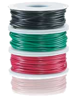

Before you get started on some simple DIY electronics projects you’re going to
need some very basic tools. What we talk about in the video is NOT a
comprehensive list but should be enough to get you started. As we create
more episodes we’ll occasionally cover additional tools that will be helpful
to have. Don’t max out your credit card trying to build Tony Stark’s
lab. Start simple and build up your toolbox over time.

Most people wouldn’t consider wire a tool but we certainly do. Once you
start protoyping things on a breadboard you will use hookup wire all over
the place. Not just to build your circuit but to troubleshoot it as well
when it doesn’t work. Wire comes in many different sizes so what you’ll
want to use is 22 AWG. This is the perfect size for use in breadboard designs.
Hookup wire by itself is useless unless you have a way to remove the
insulation around the wire. You can’t stick the insulated wire in a
breadboard socket, you have to expose the wire by removing some
insulation. For that you’ll need some wire strippers. In the video we
showed that a free way to remove the insulation is to use your
teeth. Note: using your teeth SUCKS as a way to strip a wire and gets old
really fast and definitely isn’t good for your teeth. We prefer the the nicer
version but whatever you’re able to afford should be good enough for now.
A multimeter is an absolutely essential tool for working with electronics. We’re
going to do a series on using a multimeter to quickly bring you up to speed on
how to use one. There are thousands of different meters available and most will
be sufficient for what we’ll be doing. You want to make sure that your meter has
the following 4 capabilities:
For our purposes here we’ll be using the digital
multimeter available from Sparkfun. It’s affordable and has all of the
features we need but feel free to use whatever meter you like best.
As with any hobby there are tons of different useful tools to have when working
on embedded projects. You’ll figure out what you like as you go but the
following are some other basic tools I like to have lying around my workbench:
We’ve got viewers tuning in from all over the globe so what might be a good
source for tools in the United States may be a terrible source for somebody
living in India. Our experience tells us that tools are usually best acquired
at a local shop or market. In future episodes we’ll talk about more advanced
tools like soldering stations and logic analyzers, etc but for now this is all
you should need to get started. Let us know if we missed anything and send us
any questions you may have.